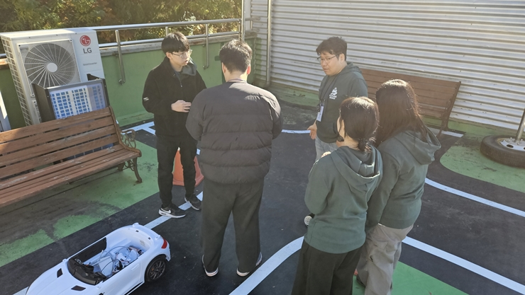
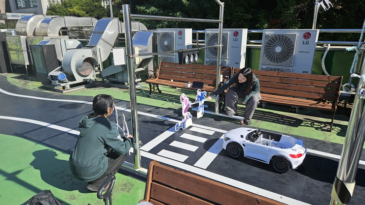
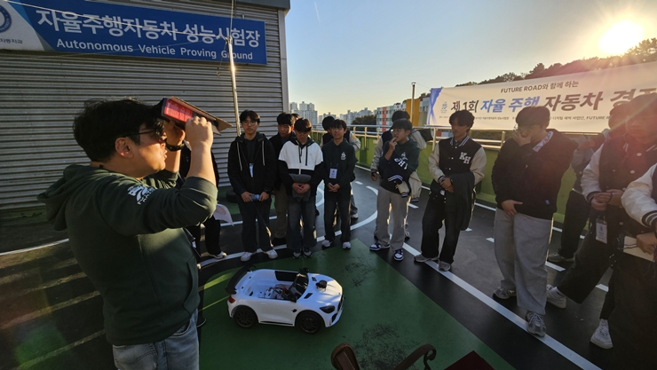

2025 제1회 경진대회 · 오토트래시의 차체와 제어 장치01 / 04 · 제작누구를 위한 차량일까요?
학교에서 옮기기 어려운 물건을 떠올려 보세요. 팀이 정한 용도에 맞춰 차체와 구동부, 제어부를 조립하고 바퀴가 의도한 방향으로 움직이는지 확인합니다.

2025 제1회 경진대회 · 차량 주변에 모여 상태를 확인하는 참가자들02 / 04 · 테스트어디에서 주행이 달라졌나요?
팀이 수집한 주행 데이터로 자율주행을 구현합니다. 예상과 다르게 움직인 구간을 찾아 차량이나 프로그램을 수정한 뒤 같은 조건에서 다시 시험합니다.

2025 제1회 경진대회 · 횡단보도 표시가 있는 코스 위의 차량03 / 04 · 최종 실증코스 위에서 확인합니다
정지선에서는 멈추고 앞차가 느리면 차로를 바꿉니다. 두 번의 실증 기회 사이에 첫 주행에서 발견한 문제를 보완할 수 있습니다.

2025 제1회 경진대회 · 참가자들이 차량을 둘러싼 제1회 현장04 / 04 · 제품 피칭4분 동안 무엇을 설명할까요?
팀 활동지를 펴고 사용자 문제, 제품의 기능, 테스트 전후 달라진 점을 설명합니다. 코스에서 확인한 기능과 앞으로 검증할 기능을 구분해 발표합니다.
4분 발표 준비하기 ↓